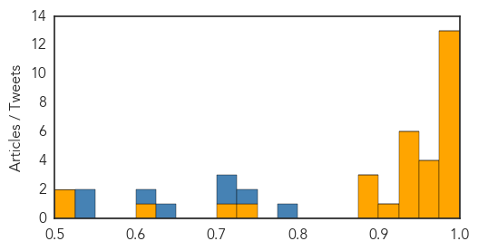

Ebola
30-Day Web Trend
1 alerts, 0 warnings

30-Day Twitter Trend
1 alerts, 0 warnings

Article Locations

Article Confidences
Top Articles:
- 1.000
- Johnson & Johnson Announces Start of Clinical Trial of Ebola Vaccine Regimen in Sierra Leone - Live Trading News
- 1.000
- What Delaware learned from Ebola crisis
- 1.000
- The disease that just will not go away.
- 0.999
- Pauline Cafferkey has Ebola virus reoccurence after meeting UK PM’s wife
- 0.999
- UK nurse hospitalized for Ebola complications
- 0.999
- Ebola Scare: Nigeria Remains Ebola-free- FG
- 0.997
- UCTH releases 15 quarantined Ebola suspects
- 0.996
- Fifteen quarantied people released in Nigeria, after Ebola rumors
- 0.996
- W. Africa travelers allowed through just 5 U.S. airports
- 0.995
- Nurse who contracted Ebola hospitalized
- 0.994
- World Health Organization confirms: Calabar patient ‘did not have Ebola
- 0.993
- First person diagnosed with Ebola in UK back in hospital condition serious
- 0.985
- Scottish nurse previously infected with Ebola readmitted to hospital
- 0.973
- Pauline Cafferkey placed in isolation again over Ebola scare
- 0.965
- Doctors sent home nurse Pauline Cafferkey with ebola FOUR days earlier
- 0.958
- Family of Ebola nurse Pauline Cafferkey say doctors missed 'big opportunity' to spot return of disease
- 0.950
- Family's fury over doctors' treatment of British nurse back in hospital with Ebola
- 0.937
- Ebola case nurse Pauline Cafferkey 'let down by doctors'
- 0.935
- Doctors ‘missed big opportunity’ over Ebola nurse
- 0.934
- Family condemns hospital failures after medics sent Ebola nurse Pauline Cafferkey home
- 0.932
- Nigeria dispels Ebola outbreak
- 0.928
- Clinic treatment of Pauline Cafferkey ‘diabolical’
- 0.928
- Ebola-infected nurse Pauline Cafferkey initially sent home by doctors after falling ill
- 0.925
- Family of Ebola nurse Pauline Cafferkey says she was 'let down'
- 0.899
- Health Care, Slimming Tips, Nutrition, News, Fitness and Lots..........
- 0.879
- Doctors 'failed to spot' Ebola nurse Pauline Cafferkey had fallen ill again
- 0.876
- Nurse in Ebola scare still 'serious'
- 0.747
- Family of Ebola nurse Pauline Cafferkey accuse doctors of 'major failings'
- 0.704
- UK Ahmadiyya Muslim Association Donates 10,000 British Pounds to Fight Ebola in Liberia
- 0.601
- UCTH: Quarantined Staff Released, Test Proves Negative for Ebola, Lassa Fever, Articles
- 0.520
- Ebola nurse met hundreds of East Kilbride pupils
- 0.506
- Survivors must struggle against stigmatisation by a community which blamed them for bringing the disease into their midst
Top Tweets:
- 0.965
- Ebola President: Weak health structures fueled Ebola. READ: http://t.co/uptkhGxp1n TackleEbola
- 0.960
- Xpert Ebola test has excellent performance - Healio http://t.co/HAHlMM3TgQ ebola EVD
- 0.926
- Ebola's latest victim: The disease that just will not go away. - Blasting News http://t.co/ePUEbz9bqs ebola EVD
- 0.906
- UCTH released 15 quarantined suspects following the death of Ebola-stricken ... - Times Gazette http://t.co/VKU9xhcJuU ebola EVD
- 0.891
- GOAL shortlisted for EU Ebola response award - BreakingNews.ie http://t.co/AigelISxBz ebola EVD
- 0.877
- Ebola and Ethnic Clashes Loom as Polls Close in Guinea Election - VICE News http://t.co/Y38ewTxOwV ebola EVD
- 0.846
- Doctors sent home nurse with ebola FOUR days earlier: Pauline Cafferkey's ... - Daily Mail http://t.co/D5CjXTJpKL ebola EVD
- 0.813
- What Delaware learned from Ebola crisis - The News Journal http://t.co/ye8wsaJ3e2 ebola EVD
- 0.757
- Family of Ebola nurse Pauline Cafferkey accuse doctors of 'major failings' - The Guardian http://t.co/kBZzS7csbs ebola EVD
- 0.707
- Ebola Scare: 15 Quarantined UCTH Staff Released - The Guardian Nigeria (satire) (press release) (blog) http://t.co/FVdvl0JBxF ebola EVD
- 0.641
- As Ebola Fades, Guinea Heads into Election - Wall Street Journal http://t.co/yZnimmyGVR ebola EVD
- 0.641
- As Ebola Fades, Guinea Heads into Election - Wall Street Journal http://t.co/NRErjujM3o ebola EVD
Unknown
30-Day Web Trend
0 alerts, 0 warnings

30-Day Twitter Trend
2 alerts, 0 warnings

Article Locations

Article Confidences

Top Articles:
- 0.931
- Norovirus Outbreak in Reno Area Schools Sickens Over 700 Students, Faculty
- 0.931
- Norovirus Outbreak in Reno Area Schools Sickens Nearly 800
- 0.917
- Chicago Tribune
- 0.917
- Chicago Tribune
- 0.917
- Chicago Tribune
- 0.917
- Chicago Tribune
- 0.917
- Chicago Tribune
- 0.882
- Flu vaccine now available for free in Rhode Island schools
- 0.871
- What We Need to Know About E. coli
- 0.840
- Group A Streptococcus: Strep throat in Spain, Impetigo in Ohio
- 0.824
- Staff deaths at leading hospital put India's TB battle in spotlight
- 0.767
- UK HealthCare Physicians Named to 2015-16 Best Doctor's List
- 0.760
- Flu vaccine now available for free in Rhode Island schools
- 0.759
- Drive-thru flu shots set for Oct. 17
- 0.716
- Group: Treat HIV sooner
- 0.693
- Angry protest at site of deadly bomb attack in Turkey
- 0.693
- Russia, Saudi Arabia agree to cooperate in Syria
- 0.693
- More stabbings in Israel as IDF kills three Palestinians
- 0.693
- Israeli jets pound Gaza as violence escalates
- 0.693
- Islamic State group leader Baghdadi hit in airstrike, says Iraq
- 0.693
- Exile to president: Guinea’s Condé seeks second term
- 0.693
- 'Europe’s last dictator' eyes EU as Belarus heads to polls
- 0.684
- Rabies: A viral response - Nation
- 0.590
- Naturopathy, local farm and food movement share a common mindset
- 0.552
- Fear grips Yendi residents over rabies outbreak
- 0.552
- Fear grips Yendi residents over rabies outbreak
- 0.550
- Celebrating World Mental Health Day
- 0.544
- Irregularities mar Sirajdikhan Health Complex affairs
- 0.543
- Cleveland's first medical hackathon points way to better community health -- but a new business model is needed: Amy R. Sheon, Scott Frank and Christopher Kippes (Opinion)
- 0.524
- Time to save water
- 0.507
- Ending Needless Suffering in Francophone Africa
Top Tweets:
- 0.766
- After 8 days without MERS cases Saudis report 2 yday & today +3 deaths. Cases in Riyadh - vestiges of outbreak? http://t.co/dULLaNCPaG
- 0.569
- KSA reports two new MERS cases, 3 deaths in Riyadh in the last 48 hrs. Total cases now at 1253 cases, 539 deaths. http://t.co/95KHN46toc